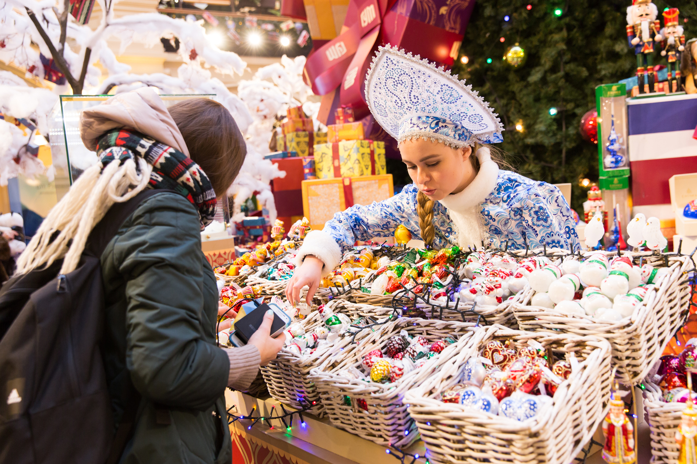

– Счастье надо?
Выходные прошли словно на перемотке. Кто её постоянно включает? Странно, что мне при рождении не досталось пульта от собственной жизни. И каждый раз им пользуется кто-то другой: скучно смотреть, видимо, вот и перематывает в надежде наткнуться на интересный момент.
– Девушка, счастье надо, спрашиваю? – настойчиво повторяют, вырывая меня из вереницы назойливых мыслей.
– Чего? – тут я, наконец, вспоминаю, что пришла на Апраксин двор. Срочное задание по поимке исчезающего в череде рабочих дней новогоднего настроения. Всё просто: покупаешь носочки с Дедом Морозом, пару игрушек на ёлку, которой ещё даже нет, любуешься гирляндами на витринах. Дней на пять заряда должно хватить, как раз до конца рабочей недели. И выходны-ые!..

– Да я смотрю, счастья тебе, красавица, в жизни не хватает. Брать будем? Последнее осталось, – мужчина выходит из-за прилавка, на котором разложены восточные сладости, коробочки с конфетами на китайском, лимонады неизвестных брендов.
– Я сладкое стараюсь не есть больше, – отмахиваюсь, глядя на предлагаемый ассортимент. Я же худеть пытаюсь, ни о каких сладостях и речи быть не может. – Не сделает оно меня счастливой.
– Счастье не в том, чтобы отказываться от того, что любишь, – уверенно выдаёт торговец.
Отдаю ему должное, видно, что очень старается распродать свой товар. Ладно, сдаюсь, один раз можно и позволить себе вкусняшку съесть:
– И что там у вас за счастье? Сколько стоит? – стряхиваю крупные снежинки с пальто, приглядываясь к разноцветным коробкам. Ещё одна снежная, холодная зима в Питере. Через годик такого повторения уже и удивляться перестану, что привычных луж в декабре нет.
Мужчина улыбается, чувствуя свою победу. Наверное, я не первая у него сегодня, кто готов коробку конфет в качестве счастья купить. Измельчало моё счастье, а ведь были времена, когда я мечтала о большем и верила в чудеса. Каждый раз под бой курантов на Новый год желания загадывала, которые, в теории, должны были меня сделать счастливой. И самое смешное, что ни одного из них даже вспомнить не могу. Исполнились или нет?
– Цену ты сама выбираешь, красавица. Если хочешь счастье открыть, то должна отказаться от того, что тебя мучает, от чего все силы от тебя уходят, - говорит мой "волшебник" и протягивает маленькую потрёпанную коробочку в стиле тех, в которые заказы на Wildberries упаковывают. Даже скотчем так же заклеена. – Если раньше откроешь, то счастья не найдёшь в ней.
– Чего? – растерянно спрашиваю то ли у себя, то ли у торговца, который, не обращая на меня больше внимания, побежал показывать пастилу и чурчхеллу следующей "красавице".
Для тех, кому интересно, продолжение истории доступно по ссылке